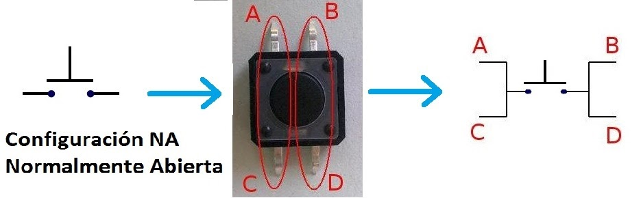
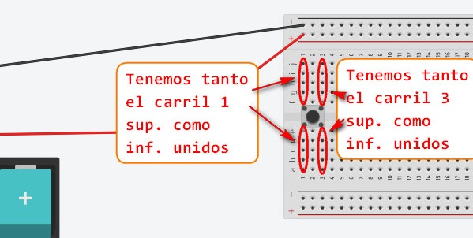
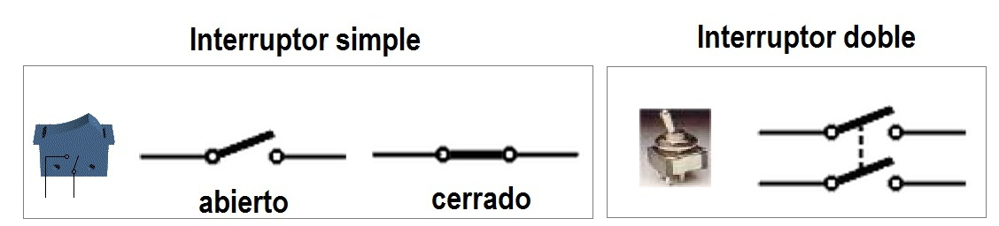
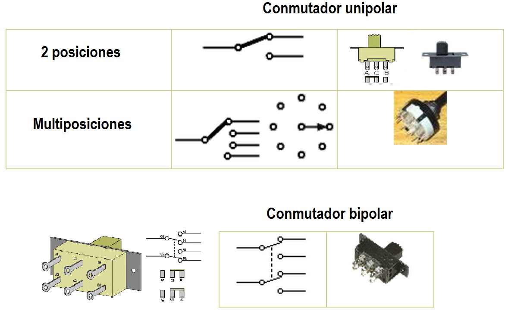
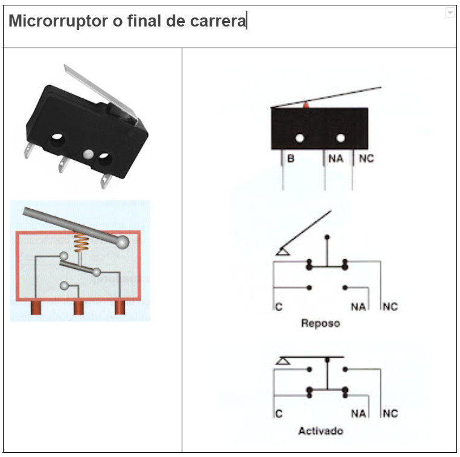

TIPOS DE ELEMENTOS DE MANIOBRA
Pulsadores 2 pines o botones
Un pulsador permite abrir o cerrar el circuito solo mientras estemos actuando sobre él. Cuando dejamos de presionar vuelve a su posición inicial.

|

|
Pulsadores 4 pines
Iguales que los anteriores pero preparados para pincharse en una placa PROTO-BOARD. Al tener unidos los terminales A-C y B-D amplia la cantidad de pines que podemos usar en dicha PROTO-BOARD.


Interruptores
Un interruptor (simple), permite abrir o cerrar un circuito y permanece en la misma posición hasta que volvemos a presionar.

Conmutadores
Un conmutador es un elemento que establece una asociación entre una entrada y una salida de las múltiples que tiene. Esta conexión perdura en el tiempo, hasta que volvemos a accionar el conmutador. El conmutador de dos posiciones tiene 3 patillas. La conexión de en medio es la común, y las patillas A y B son las posibles salidas.

Microinterruptores o finales de carrera.
Un microinterruptor o final de carrera es un componente que se acciona mediante una palanca empujada por un elemento en movimiento.
Según la forma de conectarlo, puede comportarse como conmutador o como pulsador, pudiendo seleccionar la posición inicial como normalmente abierta (NO o NA) o normalmente cerrada (NC).
Los símbolos que utilizaremos serán los mismos que los del conmutador y pulsadores, pero debemos indicar en el circuito que se trata de finales de carrera.
Para realizar los montajes prácticos, debes identificar las patillas del microinterruptor. La pata que está más cerca del apoyo de la palanca es el común, que se debe conectar siempre. La de en medio es la normalmente abierta, y la última es la normalmente cerrada.
